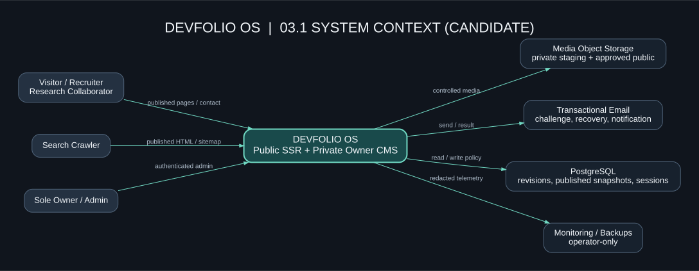
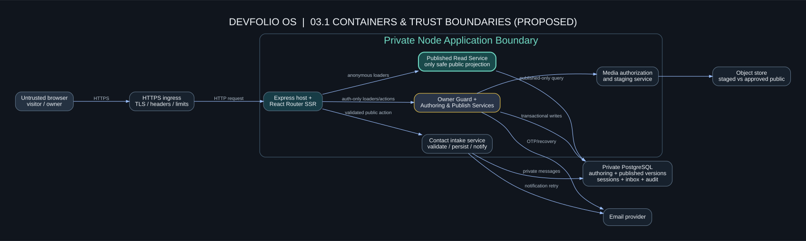
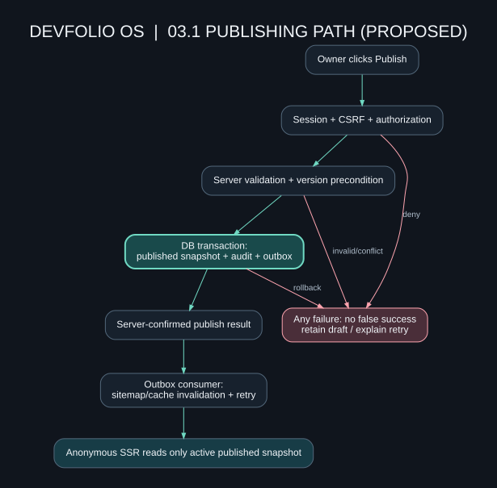

DEVFOLIO OS / SYSTEM ARCHITECTURE
Phase 03.1 — Design the system before writing code.
A reviewable candidate architecture for a public, SSR-first software engineering and AI research portfolio with a protected owner-only CMS. Designed from your Phase 01 SRS candidate and approved Phase 02 design direction.
Requirements gate: SRS v1.1 is still a candidate awaiting explicit owner approval. Database and API contracts remain provisional. No application, Penpot prototype, or security/accessibility QA is claimed to be operational.
Explore architecture diagrams


